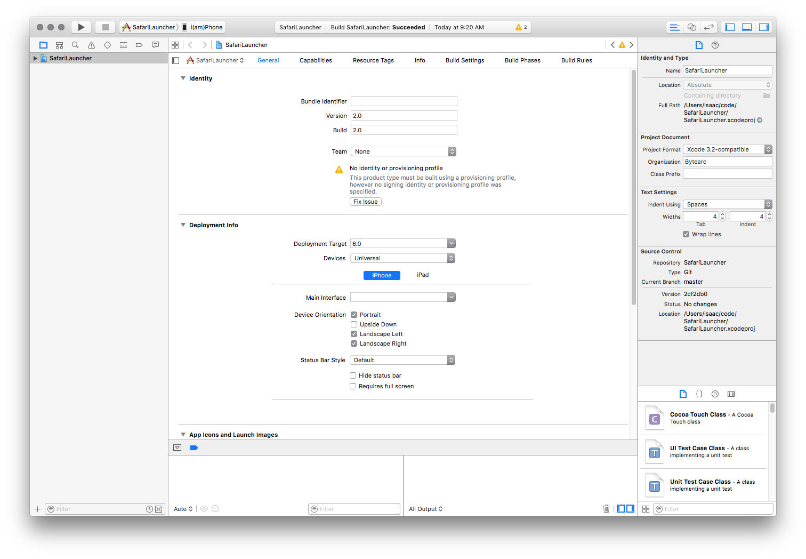
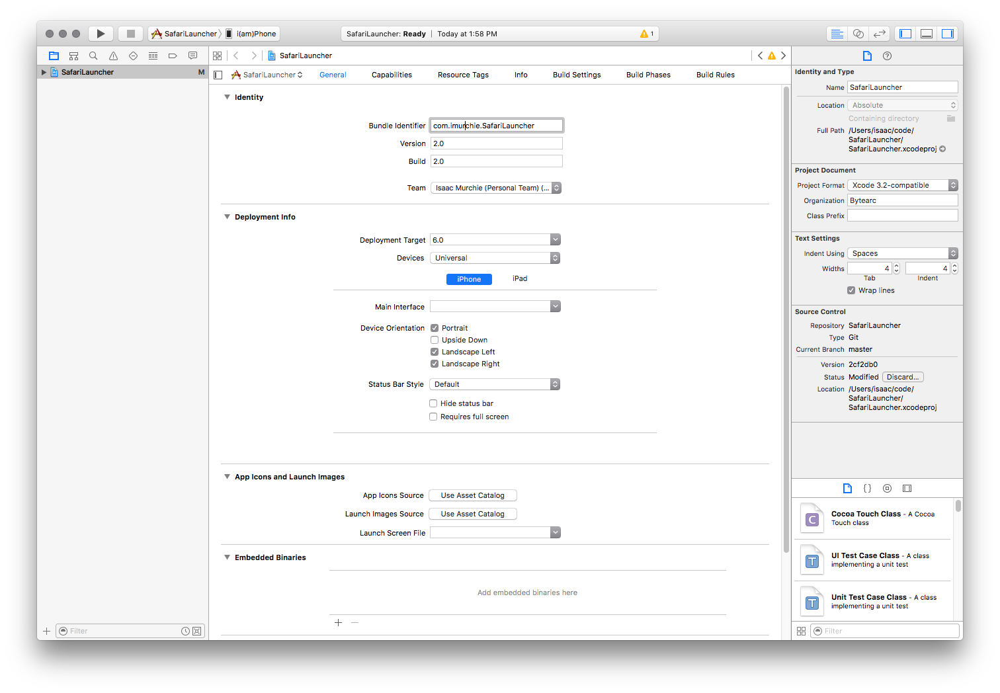
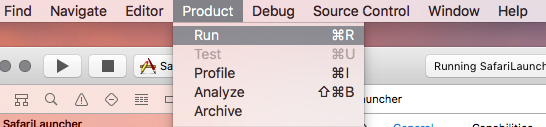

在 iOS 9.3 及以下版本的真机上运行移动 web 测试：SafariLauncher
在 iOS 9.3 或更低版本的 iOS 真实设备上运行移动 web 测试需要引入第三方应用程序SafariLauncher。 这是必要的，因为 Instruments 没有办法在设备上启动Safari 应用程序。只有先启动 SafariLauncher 应用程序，然后才能启动Safari。简单！
In some configurations, Appium is able to automatically build, sign, and install
SafariLauncher as it needs, and there is nothing else necessary to be done. If,
however, this is not the case, as is more often so with later versions of
Xcode, the following configuration needs to
be done before Safari tests on real devices can be successfully run.
在某些配置中，Appium 能够根据需要自动构建，签名和安装 SafariLauncher，没有什么额外要做的。 但是，事实并非如此，随着Xcode的版本更新更为常见。想要在真实设备上的 Safari 上成功运行自动化测试，需要完成以下配置。
自动配置SafariLauncher
The only thing needed for automatic SafariLauncher configuration is to create
a provisioning profile that can be used to deploy the SafariLauncher App.
This requires, in particular, a wildcard certificate, which is not possible if
your Apple developer account is a free one. If that is the case, skip to the
manual configuration below.
自动配置 SafariLauncher 唯一需要做的是创建一个可用于部署 SafariLauncher App 的配置文件。 这需要一个通配符证书。但是如果您的Apple开发者帐户是免费的，这是不可能的。 如果是这种情况，请跳转到下面的手动配置内容。
要创建启动器的配置文件，请进入Apple Developers会员中心，按如下步骤操作：
步骤1：创建一个新的APP ID，并选择WildCard APP ID选项，将其设置为“ * ” 步骤2：创建一个新的开发配置文件，App Id选择在步骤1中创建的。 步骤3：选择您的证书和设备，然后单击下一步。 步骤4：设置配置文件名称并生成配置文件。 步骤5：下载配置文件并用文本编辑器打开。 步骤6：搜索UUID及其字符串作为您的身份代码。
现在只需将您的UDID和设备名称包含在您所需的功能中：
{
udid: '...',
deviceName: '...',
platformName: 'iOS',
platformVersion: '9.3',
browserName: 'Safari'
}
手动配置 SafariLauncher
注意： 此过程假定您已经安装Xcode7.3或7.3.1。
可以使用 appium-ios-driver 附带的 SafariLauncher 版本，但如果这样做，每次更新Appium时，必须重新执行该过程。
要获取 SafariLauncher 的本地副本，请先从 GitHub 克隆它：
git clone https://github.com/snevesbarros/SafariLauncher.git
一旦您拥有 SafariLauncher 的源代码的本地副本，请打开 Xcode，然后打开 SafariLauncher 项目

在 SafariLauncher target 窗口中，您会看到一个错误，表示需要有一个此 app 的配置文件

为了解决这个问题，您首先需要为app输入“Bundle Identifier”。 Appium期望的默认值为com.bytearc.SafariLauncher，但这可能无法用于构建。 在这种情况下，请选择其他的东西，并记下它。 然后选择“Team”，并允许创建配置文件

最后，确保您的设备已连接到计算机，并将其选为目标设备

并运行构建和安装操作来编译app并将其推送到您的设备上

现在你的设备上有一个可用的 SafariLauncher。 该app本身是一个简单的屏幕，点击一个按钮将启动 Safari

如果您选择了与默认（com.bytearc.SafariLauncher）不同的app的软件包标识符，则最后一步是必需的。 如果你这样做，在使用bundleId所需的功能创建会话时，需要将它发送到Appium：
{
udid: '...',
deviceName: '...',
platformName: 'iOS',
platformVersion: '9.3',
browserName: 'Safari',
bundleId: 'com.imurchie.SafariLauncher'
}
本文由 高鹏 翻译，由 lihuazhang 校验。